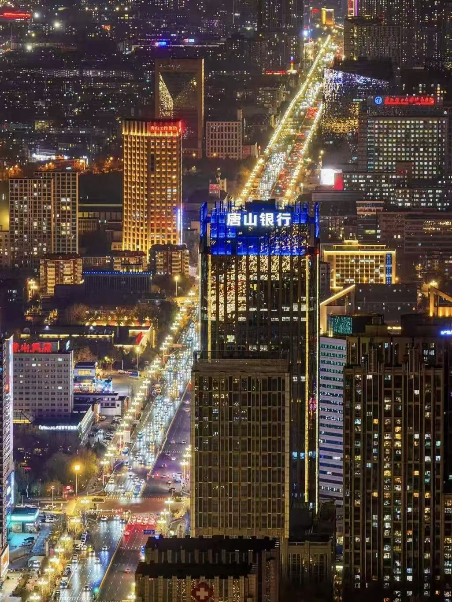
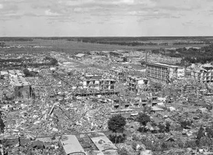
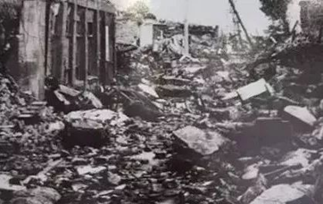
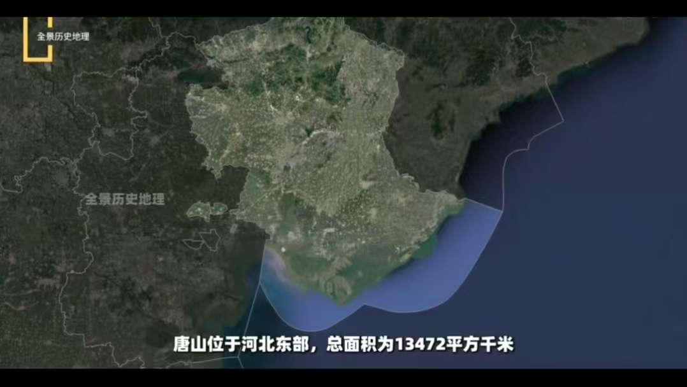
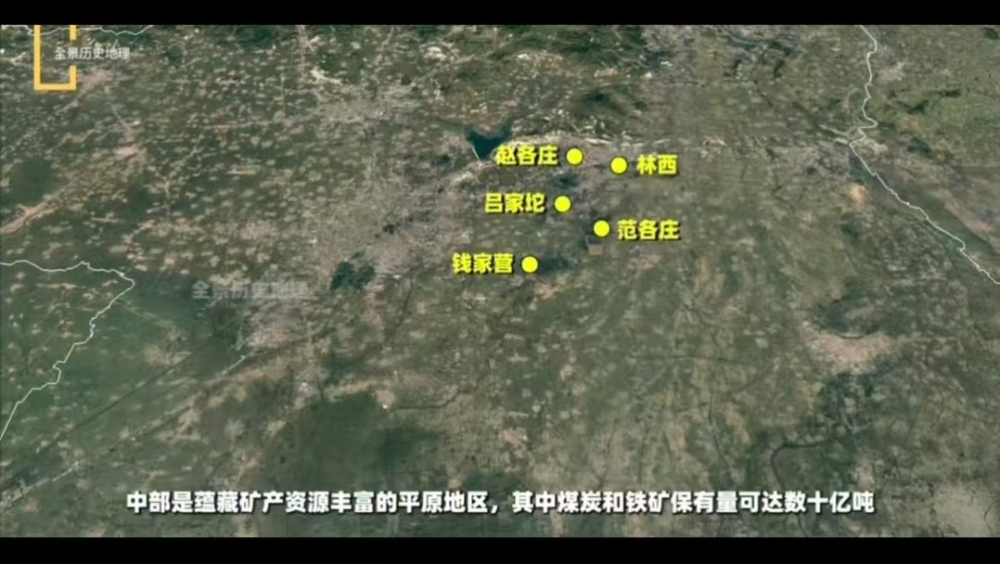
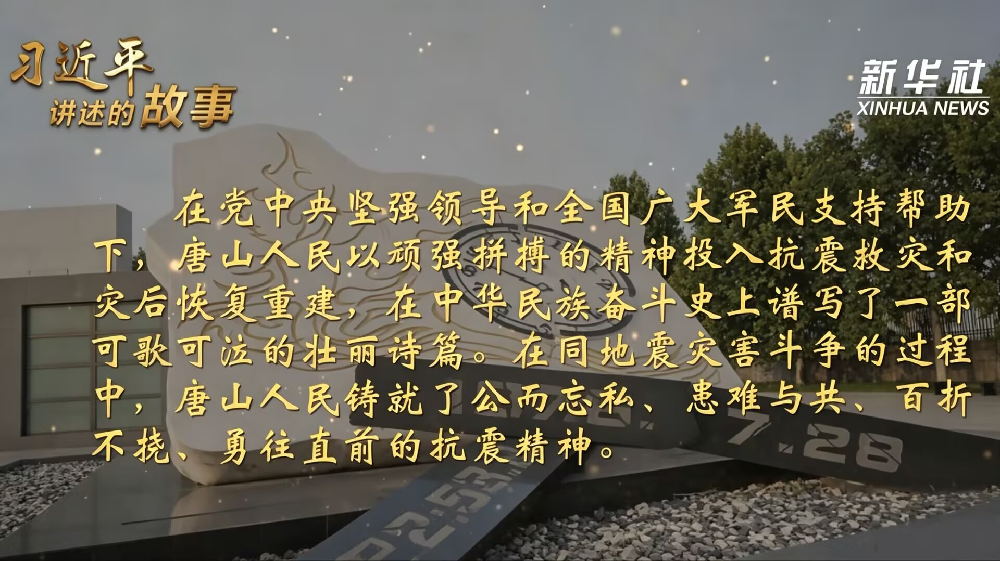
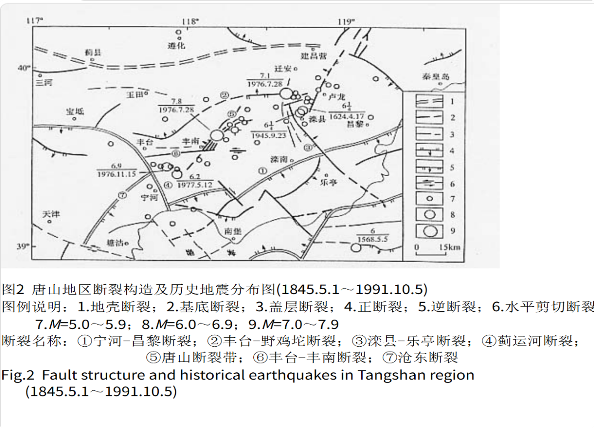

旧时代遗留的创伤 新时代发展的难题
依旧潜藏在城市肌理中

如今山海安然 万象更新的唐山
所有蓬勃与希望
都始于那场破碎后的重生
时间拨回1976年7月28日凌晨3时42分
一场7.8级强震骤然降临

震后城市全景 · 1976

街道废墟 · 1976
市民正在熟睡，毫无防备，无法及时逃生。
彼时建筑多为砖石结构，缺乏抗震设计，房屋质量参差不齐。
浅源地震，能量衰减少，破坏力集中释放。
唐山是工业重镇，人口密集，百万人口城市瞬间被摧毁。
唐山地处华北强地震断裂带
震源浅 震动持续时间长
极震区完全覆盖城市核心生活区
先天不稳定的地质条件
是灾难发生不可规避的客观诱因
也为如今城市防灾建设留下长期挑战
历经半个世纪建设，唐山彻底走出灾后经济崩塌困境，经济规模实现数百倍增长。
民生是重建的核心，50年间唐山完成人口回流、居住环境改造，居民生活质量大幅提高。
唐山是一座多地震的城市，我们想了解唐山地震监测预警能力如何？在国内处于什么水平?
唐山市地震监测工作是建设最早、较为完善的一个工作体系。经过近50年的建设和发展，地震监测方式已由单一化人工模拟观测逐步向数字化、网络化、智能化发展，目前已构建了覆盖全市的地震监测预警体系。
—— 市应急管理局震害防御科 李洋
国家自上而下的政策资金扶持，区域共同发展，京津冀产业承接持续投入。
本地得天独厚的矿产工业基底，为城市重建奠定坚实经济基础。


全民众志成城的重建精神，城市建设的内核动力。

唐山能够实现远超同类城市的重建速度
是多重利好叠加的结果
上述三者共同造就了这座城市的重生奇迹
震后重建追求速度，城市规划被压缩，基础设施标准降低。"先有房住，再求好房"的理念导致城市功能布局不合理，缺乏长远规划。
百年煤矿开采形成的产业格局难以撼动，钢铁、煤炭等传统产业提供了大量就业，也绑定了城市的经济结构。转型意味着短期利益牺牲，阻力巨大。
地处华北地震带，地震风险是城市发展的隐性成本。防震减灾投入持续增加，影响了其他领域的资源配置。

设定年度落后产能压减指标，加大高新、文旅产业招商引资，降低重工业依赖。
逐年推进老旧小区、乡村房屋抗震改造，四级预警网络全域覆盖，常态化全民防灾科普演练。
完善伤残、老年幸存者专项补贴，增设社区心理干预站点，深挖抗震文旅IP。
出台青年落户、就业安居扶持政策，均衡新老城区公共资源配套，留住年轻劳动力。
废墟之上的重生从来不是终点
持续破解发展短板
筑牢城市韧性
才是唐山永续生长的长久答案
唐山大地震50周年 · 数据新闻
1976 — 2026